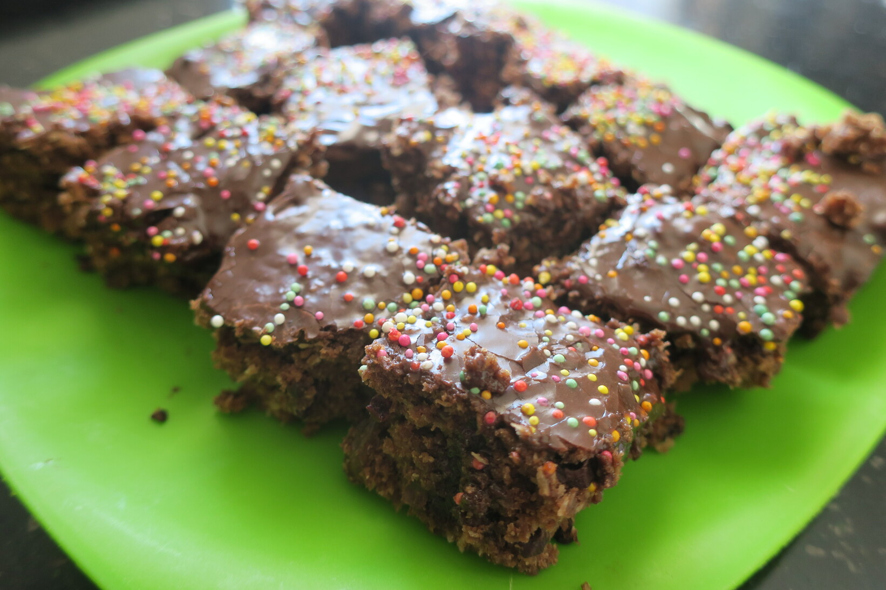

Chocolate Squares
 Vegan
Vegan
Guinane family recipe, slightly changed each generation.

1 cupof flour1 cupof sugar1 cupof coconut1 cupof wheat biscuits (4)1 cupof sultanas2 tbspof cocoa
Mix dry ingredients together in a bowl
- walnuts or choc chips (optional)
Sometimes I add walnuts or choc chips if we have them
1 cupof almond milk2 tbspof margarine
Mix in wet ingredients. You don’t have to melt the butter but it’s easier to mix if you do.
Bake for 20-30mins
1 cupof icing sugar2 tbspof almond milk1 tbspof cocoa
Make chocolate icing and add once cool
Sprinkle coconut or 100s and 1000s on top of icing